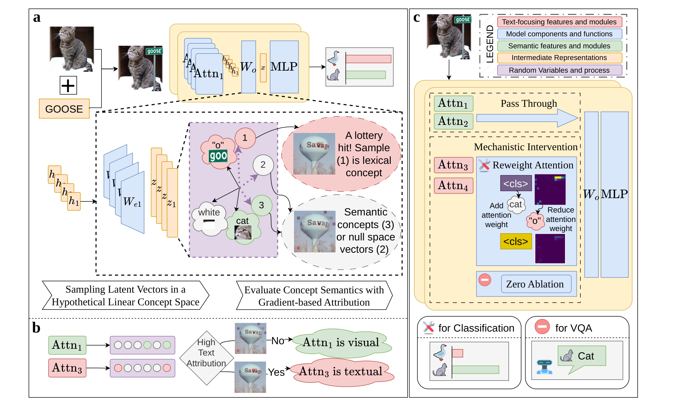
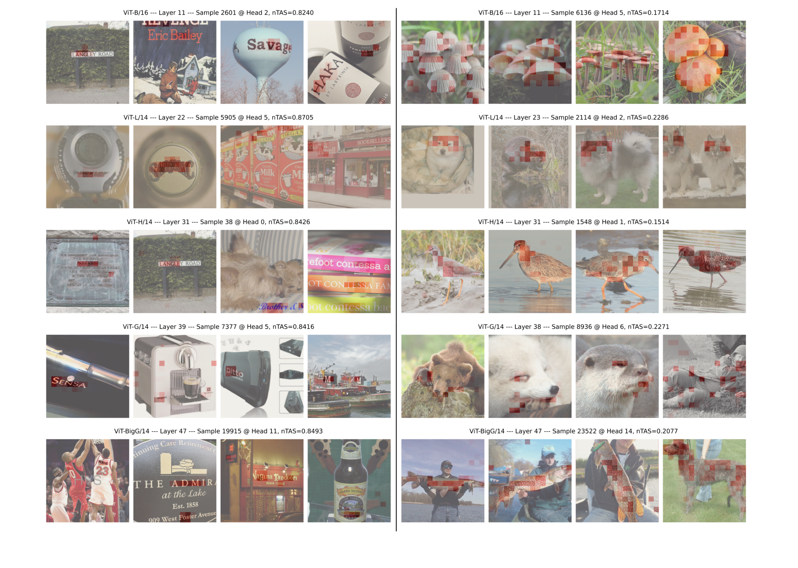
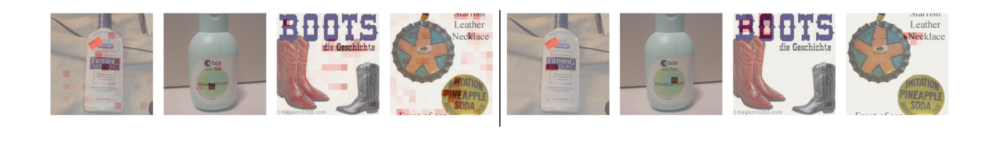
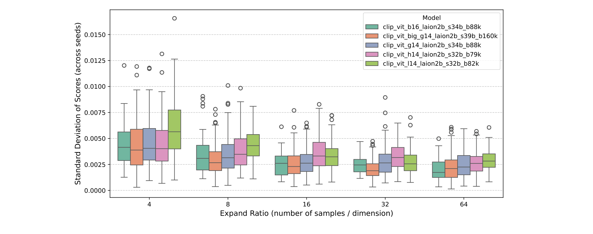

1 · The attack. A word pasted onto the image hijacks the prediction: the cat is classified as goose. The lexical signal travels through a small set of attention heads inside the frozen CLIP encoder.
2 · Decompose & sample. Each attention head is a low-dimensional subspace. We sample random directions in every head — a stochastic lottery in which some samples land on real concept directions, lexical or semantic. No training, no learned dictionary.
3 · Attribute. Gradient-based attribution against the text region scores every head's lexical focus (nTAS); attribution heat concentrates on the injected word. A z-test flags the heads that read text instead of looking at the object.
4 · Intervene. Reweighting attention away from text patches — or zero-ablating the flagged heads in LVLMs — suppresses the lexical circuit. The prediction returns to cat, with no training and near-zero test-time cost.
Text painted on an image shouldn't decide what the model sees
CLIP vision encoders power most modern large vision-language models, yet they share a critical failure mode: irrelevant text appearing inside an image biases the representation toward its lexical meaning — a cat labeled “GOOSE” becomes a goose. This typographic attack poses real risk to safety-critical systems such as autonomous driving.
We propose a training-free mechanistic interpretability method that localizes this vulnerability. Sampling-based interpretation of hidden states, combined with gradient-based attribution, quantitatively separates semantic from lexical focus at the level of individual attention heads. Probabilistic analysis and circuit mining isolate the ViT components that disproportionately encode lexical information — the mechanistic source of the attack.
Simple interventions on the identified circuits — selective attention reweighting or zero ablation, with no additional training — substantially improve robustness, outperforming both supervised and training-free defenses on object classification, and lifting VQA accuracy of state-of-the-art LVLMs (Qwen3-VL, InternVL3.5, Gemma3) under typographic interference on RIO-Bench.
Three ideas, no gradients through training
Sampling-based concept mining
Under the Linear Representation Hypothesis, concepts are directions. Instead of learning a sparse dictionary, we sample random vectors — and show that the low-dimensional MHSA head subspace concentrates the lottery: interference shrinks, and a feasible number of samples reliably hits interpretable concept directions.
Ranking heads by lexical focus
A gradient-based, normalized Text Attribution Score jointly measures each head's attention focus and concept direction against text-region masks. A simple z-test over heads in a layer extracts the lexical circuit — from 1,280 unlabeled images, in under a minute per model.
Reweight or ablate the circuit
For CLIP classification, attention reweighting redirects the <cls> token away from text patches in the vulnerable heads. For LVLMs without a class token, zero ablation removes the lexical distraction. Both are test-time edits on a fixed set of head indices — effectively free.

Robustness across five ViT backbones
Zero-shot object classification under typographic attack, before and after intervention. OCA: object classification accuracy (higher is better). TCR: text confusion rate — how often the model predicts the injected text label (lower is better).
| Model | RTA-100 | Disentangling | PAINT | IN-100-Text | ||||
|---|---|---|---|---|---|---|---|---|
| OCA ↑ | TCR ↓ | OCA ↑ | TCR ↓ | OCA ↑ | TCR ↓ | OCA ↑ | TCR ↓ | |
| ViT-B/16 | 56.3 | 30.8 | 52.2 | 44.4 | 60.2 | 33.0 | 54.6 | 33.0 |
| + intervention | 68.7 | 12.6 | 88.3 | 11.7 | 73.8 | 16.5 | 74.2 | 7.1 |
| ViT-L/14 | 54.6 | 39.0 | 51.7 | 47.8 | 61.2 | 33.0 | 58.2 | 32.9 |
| + intervention | 68.9 | 21.2 | 68.3 | 31.1 | 68.9 | 22.3 | 74.9 | 12.1 |
| ViT-H/14 | 53.4 | 42.0 | 46.1 | 53.3 | 49.5 | 46.6 | 56.6 | 36.9 |
| + intervention | 76.2 | 14.4 | 82.2 | 17.2 | 75.7 | 14.6 | 79.1 | 9.5 |
| ViT-G/14 | 50.3 | 45.8 | 58.3 | 41.1 | 53.4 | 39.8 | 57.0 | 36.4 |
| + intervention | 68.8 | 23.4 | 81.7 | 17.8 | 75.7 | 18.4 | 76.4 | 12.7 |
| ViT-bigG/14 | 61.0 | 32.5 | 48.3 | 51.1 | 49.5 | 38.8 | 62.3 | 31.0 |
| + intervention | 75.7 | 15.3 | 72.8 | 26.7 | 79.6 | 10.7 | 80.6 | 8.9 |
All models pretrained on LAION-2B. Clean-accuracy trade-off is under 1% (see paper appendix). IN-100-Text is our new benchmark: ImageNet-100 with realistic, contextually coherent text distractors rendered by Qwen-Image-Edit.
Against prior defenses
Average object classification accuracy over the five backbones, using the same 0.1% of ImageNet-1K training images as the training-free baseline.
| Method | RTA-100 | Disentangling | PAINT | IN-100-Text | IN-100 (clean) |
|---|---|---|---|---|---|
| Defense-Prefix (supervised) | 63.6 | 67.8 | 67.8 | 70.1 | 81.4 |
| Dyslexify (training-free) | 67.0 | 67.6 | 70.1 | 72.8 | 81.3 |
| Dyslexify (full IN-100 train set) | 68.5 | 70.7 | 72.2 | – | 81.0 |
| Ours (nTAS) | 71.7 | 78.7 | 74.7 | 77.0 | 81.0 |
Averages over ViT-B/16, L/14, H/14, G/14 and bigG/14 — an average gain of +6.1 OCA over greedy search on noisy attention maps, at a fraction of the labeled data.
The same circuits generalize to vision-language models
Applying the mining pipeline to the vision towers of Qwen3-VL, InternVL3.5 and Gemma3 (attribution on the first visual token, zero ablation of lexical heads) improves VQA accuracy on RIO-Bench's attacked multiple-choice split — with a −0.3% to +0.6% effect on clean-image VQA.
| Model | Base | Ours | Δ overall |
|---|---|---|---|
| Qwen3-VL-4B | 62.95 | 63.92 | +0.97 |
| Qwen3-VL-8B | 70.11 | 71.69 | +1.58 |
| Qwen3-VL-30B-A3B | 64.98 | 66.11 | +1.13 |
| InternVL3.5-8B | 58.24 | 58.47 | +0.23 |
| InternVL3.5-14B | 53.07 | 53.08 | +0.01 |
| Gemma3-4B | 44.35 | 46.07 | +1.73 |
| Gemma3-12B | 48.24 | 49.78 | +1.53 |
Overall VQA accuracy (%) on RIO-Bench obj-attack, averaged over easy / medium / hard subsets.
High-nTAS samples really do read text



BibTeX
@inproceedings{liu2026typographic,
title = {Towards Robustness against Typographic Attack
with Training-free Concept Localization},
author = {Liu, Bohan and Ye, Wenqian and Xiong, Guangzhi and
He, Zhenghao and Sinha, Sanchit and Zhang, Aidong},
booktitle = {European Conference on Computer Vision (ECCV)},
year = {2026}
}